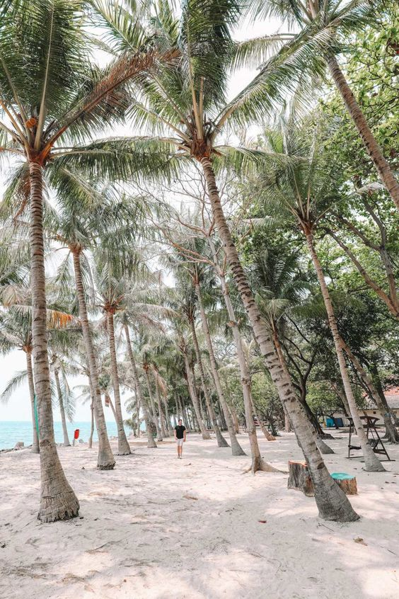

- 

最新旅遊菜單
兩種方式的旅遊體驗
探索文化和自然之美
隨時有客服人員與您洽談
安佐爾夢幻公園位於雅加達市區北端，緊靠雅加達海灣。園內建有新型設計的大旅館、露天電影院、兒童娛樂場等。安佐爾夢幻公園內還建有別墅區，具有典型的印尼民族特色。
東南亞最大的清真寺，位在獨立廣場的東北方，會有住持跟各位講解動線，並在專人的陪同下，從二樓上觀看整個清真寺內部，若體力不錯可以在參觀完中央的摩納斯紀念塔。

是荷蘭人統治時代的行政中心，沿途有Mindori Musuem與Bank Indonesia Musuem等前荷蘭人時期的銀行總行改建成的博物館，裡面有以前老銀行總行地下的大型金庫！
安佐爾夢幻公園位於雅加達市區北端，緊靠雅加達海灣。園內建有新型設計的大旅館、露天電影院、兒童娛樂場等。安佐爾夢幻公園內還建有別墅區，具有典型的印尼民族特色。
東南亞最大的清真寺，位在獨立廣場的東北方，會有住持跟各位講解動線，並在專人的陪同下，從二樓上觀看整個清真寺內部，若體力不錯可以在參觀完中央的摩納斯紀念塔。
是荷蘭人統治時代的行政中心，沿途有Mindori Musuem與Bank Indonesia Musuem等前荷蘭人時期的銀行總行改建成的博物館，裡面有以前老銀行總行地下的大型金庫！
與醬油一起探索世界大小事